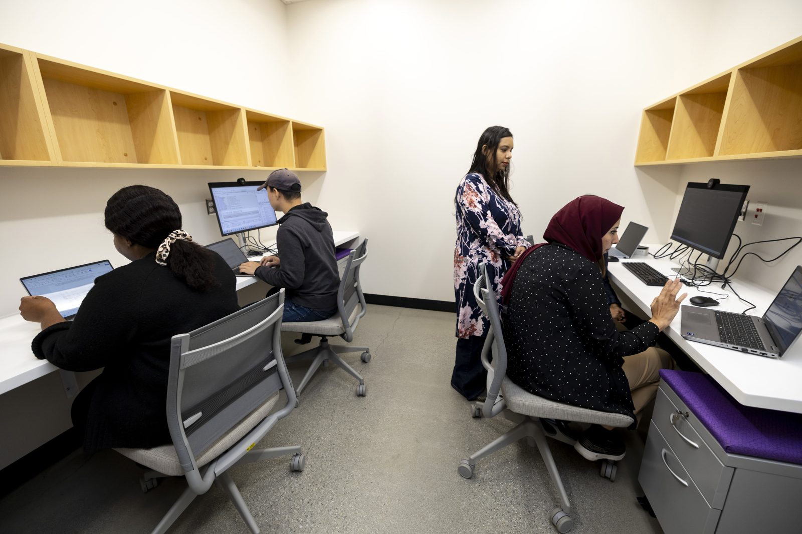
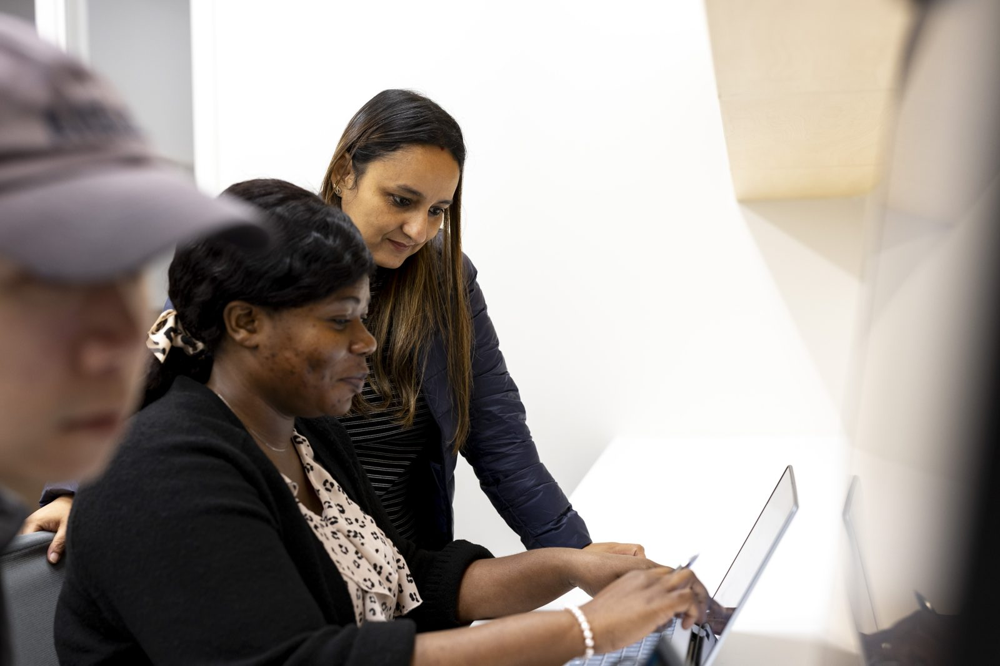
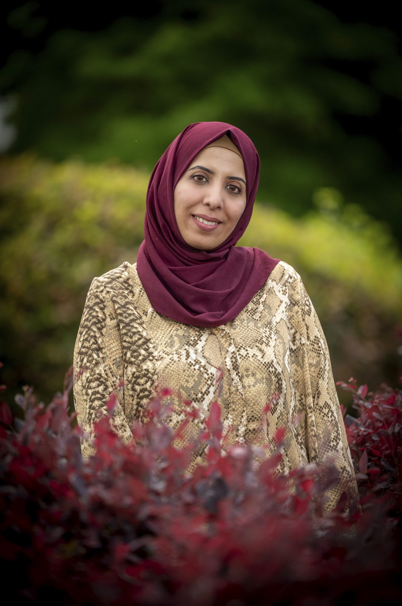

AI Security Research in Action
Student-centered research at the intersection of artificial intelligence, cybersecurity, and trustworthy systems.

Built Around Collaboration
TrustSec AI Lab welcomes work with UAlbany labs, CEHC collaborators, and interdisciplinary partners.

Led by Nour Alhussien
Guiding research in adversarial robustness, privacy-preserving intelligence, and secure AI deployment.